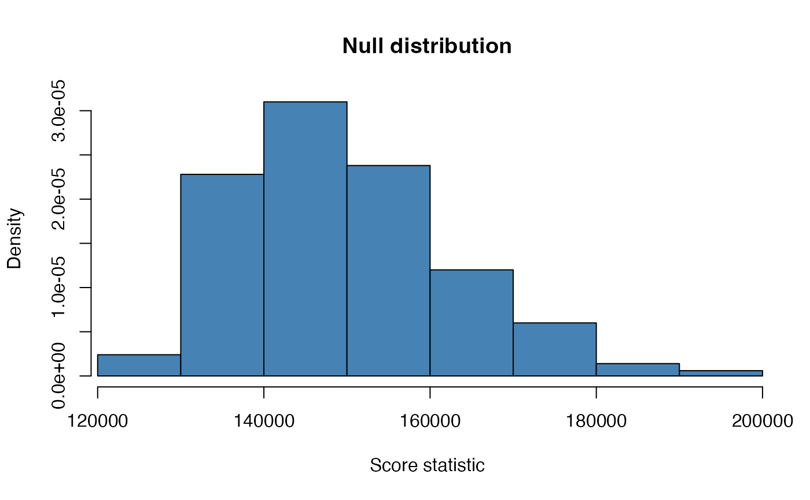
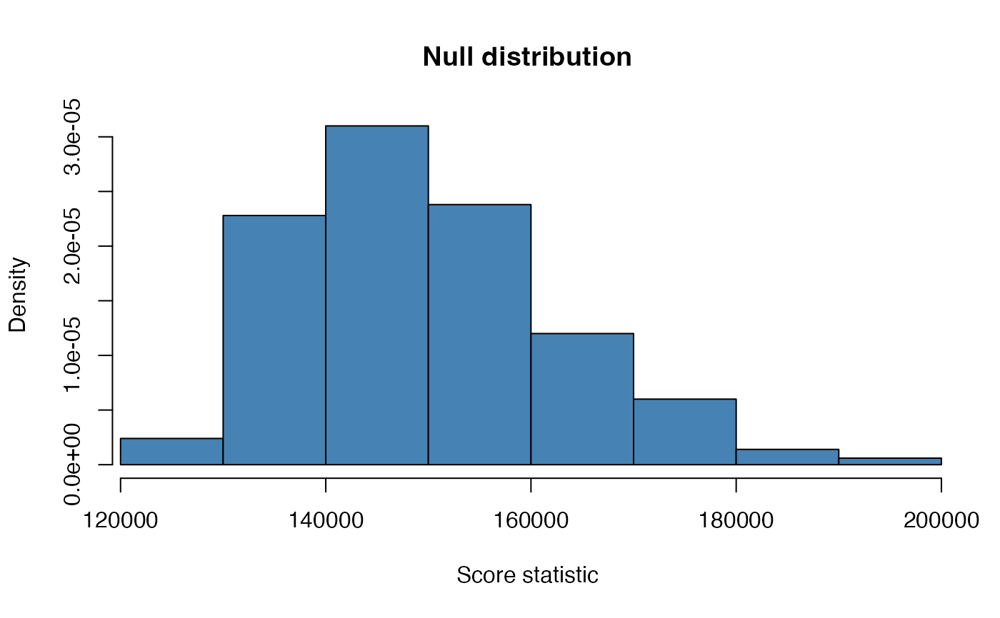

Function for testing the null hypothesis that all population precision matrices are equal and thus the necessity for the fusion penalty. Note, the test performed is conditional on the supplied penalties and targets.
fused.test(Ylist, Tlist, lambda, n.permutations = 100, verbose = FALSE, ...)Arguments
- Ylist
A
listof length \(G\) of observations matrices for each class. Variables are assumed to correspond to the columns.- Tlist
A
listof target matrices for each class. Should be same length asYlist-- lambda
A non-negative, symmetric \(G\) by \(G\)
matrixgiving the ridge and fusion penalties.- n.permutations
The number of permutations to approximate the null distribution. Default is 100. Should be increased if sufficient computing power is available.
- verbose
Print out extra progress information
- ...
Arguments passed to
ridgeP.fused.
Value
Returns a list values containing the observed test statistic
and the test statistic under the null distribution.
Details
The function computes the observed score statistic \(U_obs\) using the
fused ridge estimator on the given data. Next, the score statistic is
computed a number of times (given by n.permutations) under the
null-hypothesis by effectively permuting the class labels of the data.
References
Bilgrau, A.E., Peeters, C.F.W., Eriksen, P.S., Boegsted, M., and van Wieringen, W.N. (2020). Targeted Fused Ridge Estimation of Inverse Covariance Matrices from Multiple High-Dimensional Data Classes. Journal of Machine Learning Research, 21(26): 1-52.
See also
Examples
ns <- c(10, 5, 23)
Ylist <- createS(ns, p = 15, topology = "banded", dataset = TRUE)
# Use the identity target matrix for each class
Tlist <- replicate(length(ns), diag(15), simplify = FALSE)
# Do the test
lm <- matrix(10, 3, 3)
diag(lm) <- 1
ft <- fused.test(Ylist, Tlist, lambda = lm,
n.permutations = 500)
print(ft)
#>
#> Score-based permutation test
#>
#> Null hypothesis: Population precision matrices are equal
#> Alternative: Population precision matrices are not equal
#>
#> Observed statistic: U = 158921.336, p-value = 0.224
#> Summary of null distribution obtained by permutation:
#> Min. 1st Qu. Median Mean 3rd Qu. Max.
#> 122200 139900 147800 149600 157900 197100
# Summary spits out a bit more information
summary(ft)
#>
#> Score-based permutation test
#>
#> Null hypothesis: Population precision matrices are equal
#> Alternative: Population precision matrices are not equal
#>
#> Observed statistic: U = 158921.336, p-value = 0.224
#> Summary of null distribution obtained by permutation:
#> Min. 1st Qu. Median Mean 3rd Qu. Max.
#> 122200 139900 147800 149600 157900 197100
#>
#> The number of extreme observations under the null hypothesis
#> was 112 out of 500 permutations.
# The returned object can alo be plotted via
hist(ft)
 # or via the alias
plot(ft)
# Customization and parameters work a usual:
hist(ft, col = "steelblue", main = "Null distribution", add.extra = FALSE,
xlab = "Score statistic", freq = FALSE)

# or via the alias
plot(ft)
# Customization and parameters work a usual:
hist(ft, col = "steelblue", main = "Null distribution", add.extra = FALSE,
xlab = "Score statistic", freq = FALSE)
